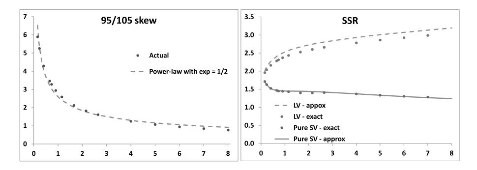
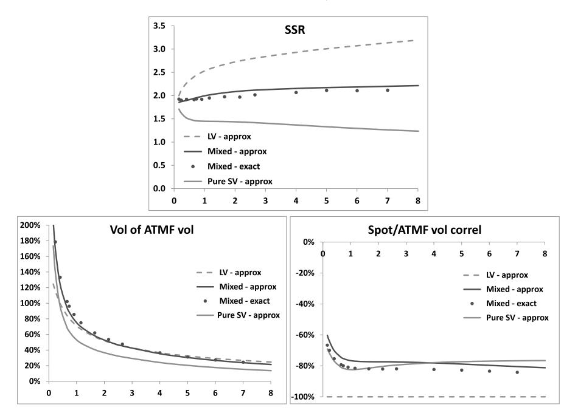
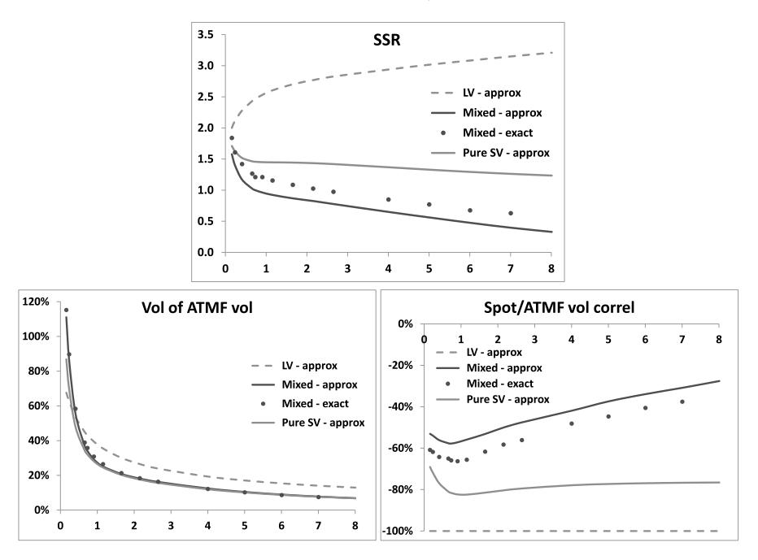
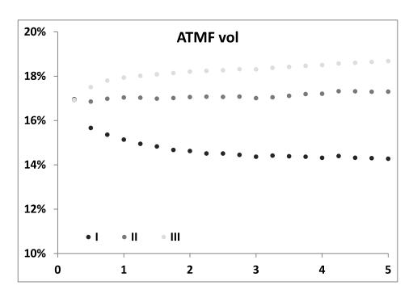
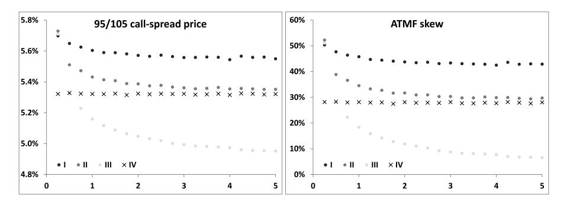

第十二章：局部随机波动率模型
——局部与随机波动率的结合
本笔记基于 Bergomi《Stochastic Volatility Modeling》第十二章，按原书行文结构整理。第十二章是第二章（局部波动率）和第七章（前向方差模型）的自然延伸与综合，是全书理论体系的集大成之作。
目录
- 导言：混合模型的动机（§12.1）
- 定价方程与校准（§12.2）
- 可用性条件（§12.3）
- 隐含波动率的动态（§12.4）
- 数值算例（§12.5）
- 讨论与未来偏斜（§12.6）
- 总结（§12.7）
- 端到端工作流算例
导言：混合模型在全书中的位置
第二章建立了局部波动率模型——这是最简单的市场模型，以 为一维马尔可夫表示，能够精确校准到整张波动率曲面。但代价是所有动态特征（vol of vol、现货/波动率相关性、未来偏斜）均由当前微笑完全锁定，没有任何独立调节的自由度。第二章 §2.6 指出，局部波动率模型对未来偏斜的预测系统性偏低——它将现货/波动率协方差集中在近期（ 接近 0 的区域），导致远期偏斜以 的速率衰减，这使得障碍期权和 cliquet 的定价存在结构性问题。
第七章建立了前向方差模型——以整条前向 VS 方差曲线 为状态变量，通过多因子 OU 过程驱动，可以独立控制 vol of vol 的期限结构和现货/波动率相关性。前向方差模型的核心优势在于参数分层： 每日从市场输入（VS 波动率期限结构），结构参数 基于历史数据和经济判断设定，两者解耦。这使得 vol of vol 和偏斜的盈亏平衡水平不再随日常微笑变化而跳变。但前向方差模型无法精确校准到整张香草微笑——它只能精确匹配 VS 或 ATMF 波动率期限结构（一维），对偏离 ATM 的香草期权存在定价残差。
本章的混合模型（local-stochastic volatility，LSV）试图结合两者优势：用局部波动率成分精确校准香草微笑（消除截面残差），用随机波动率成分独立控制 vol of vol 和前向偏斜。具体形式为：
其中 是前向方差模型中的瞬时方差因子（由多因子 OU 过程驱动）， 是确定性的局部波动率函数（通过自洽校准确定）。
核心问题：这个看似自然的乘积形式是否真的"可用"？第二章 §2.7 证明了局部波动率模型的 carry P&L 具有标准 gamma/theta 形式（盈亏平衡水平与支付函数无关），这是市场模型的本质特征。混合模型引入了额外的状态变量 ——这些变量不是可交易的对冲工具——是否会导致 P&L 泄漏（即出现无法通过对冲工具管理的随机贡献）？
Bergomi 在 §12.3 给出了严格的回答：大多数文献中提出的混合模型都不可用（包括以 Heston 为底层模型的版本、Bloomberg 模型等），只有满足特定条件的模型（称为"可容许类"）才能保证 carry P&L 不泄漏。双因子前向方差模型属于可容许类，而 Heston 模型不属于。
本章读完后，你将掌握以下能力：
- 理解混合模型的定价方程如何从前向方差模型推广（§12.2），以及 PDE 方法和粒子方法两种校准局部波动率成分的技术实现
- 判断一个混合模型是否"可用"（§12.3），理解 P&L 泄漏的根源以及为什么双因子模型满足可用性条件而 Heston 不满足
- 计算混合模型中 SSR、vol of vol、现货/波动率相关性的近似公式（§12.4），并将其与第二章和第七章的结果对比
- 通过数值算例（§12.5–12.6）量化混合模型相对于纯局部波动率和纯随机波动率在 SSR、未来偏斜、前向起算期权定价上的差异
读者背景：本章假设已充分理解第二章（局部波动率）和第七章（前向方差模型）的内容，对 Dupire 公式、SSR 定义、前向方差的 SDE 表示均已熟悉。
1. 导言：混合模型的动机（§12.1）
1.1 局部波动率模型的核心局限回顾
第二章已经确立：局部波动率模型是满足市场模型条件的最简单模型——它以 为一维马尔可夫表示，能够精确校准到任意无套利的波动率曲面。从市场模型的视角，局部波动率的 carry P&L（式 2.107）具有标准 gamma/theta 形式：
其中 代表对冲工具（现货与各香草期权）， 是模型给出的盈亏平衡协方差矩阵（正定且与支付函数无关）。
但这个"完美校准"的代价是所有动态特征均被当前微笑唯一确定：
| 动态指标 | 局部波动率模型的约束 | 第二章对应公式 |
|---|---|---|
| SSR（） | ，短期 | 式 2.64 |
| vol of vol | ，完全由偏斜锁定 | 式 2.83 |
| 未来偏斜 | ，随时间快速衰减 | 式 2.92 |
第二章 §2.6 的核心结论：局部波动率模型将现货/波动率协方差集中在近期（见式 2.89 的加权积分，权重 在 处最大），导致远期起算期权（如 cliquet、远期障碍期权）的前向偏斜被系统性低估。对于典型的幂律偏斜衰减 ，1 年后的 1 月期偏斜约为当前 1 月期偏斜的 倍——这与市场观察到的偏斜持续性明显不符。
1.2 前向方差模型的核心优势回顾
第七章的前向方差模型直接以 （前向 VS 方差）为状态变量，定价方程（式 7.4）为：
carry P&L 同样具有标准形式（式 7.3），三类 gamma/theta 对的盈亏平衡水平由 和 决定——这两个函数由模型参数 设定，不随日常微笑变化而变化。
关键优势在于参数分层：
- 第一层： 每日从市场 VS 波动率期限结构直接录入，保证对 VS 或 ATMF 波动率期限结构的精确匹配
- 第二层：结构参数 基于历史数据估计或经济判断设定（月度或季度调整），决定 vol of vol 期限结构和现货/波动率相关性
第七章 §7.4 证明：双因子对数正态模型可以在 1 月至 5 年的期限范围内精确匹配幂律型 vol of vol 期限结构 （图 7.1），克服了 Heston 等单因子模型的指数衰减约束。更重要的是，vol of vol 和偏斜可以在一定程度上独立控制——改变 调整 vol of vol 幅度不会直接改变 ATMF 偏斜（偏斜主要由 决定）。
但前向方差模型的局限同样明显：无法精确校准整张香草微笑。第七章 §7.5 明确指出，前向方差模型通常只精确匹配 VS 或 ATMF 波动率期限结构（一维），对偏离 ATM 的香草期权存在定价残差——这个残差在第七章的框架下是"有意为之"的（保持结构参数稳定性优先于消除截面拟合误差），但对于需要精确定价所有香草期权的场景（如做市商账簿、含有强偏斜敏感性的障碍期权），这一残差是不可接受的。
1.3 混合模型的自然构造与核心问题
从上述对比可以看出，局部波动率和前向方差模型是互补的：
| 维度 | 局部波动率（第2章） | 前向方差模型（第7章） | 理想目标 |
|---|---|---|---|
| 香草微笑校准精度 | ✅ 精确（零残差） | ⚠️ 仅 VS/ATMF 期限结构 | ✅ 精确 |
| vol of vol 独立控制 | ❌ 由微笑锁定 | ✅ 参数 独立设定 | ✅ 独立 |
| 前向偏斜稳健性 | ❌ 系统性偏低（） | ✅ 时间齐次，未来≈当前 | ✅ 稳健 |
| 日常重校准的稳定性 | ❌ 动态参数随微笑跳变 | ✅ 结构参数稳定 | ✅ 稳定 |
混合模型的构造动机显而易见：能否将局部波动率的"精确校准"能力与前向方差模型的"动态灵活性"结合起来？
最自然的尝试是乘积形式（式 12.1）：
其中 来自第七章的双因子对数正态模型（式 7.28）， 是确定性的局部波动率函数。直觉上，这个分解试图实现：
- 部分：吸收香草微笑的形状（偏斜和曲率），通过自洽校准（式 12.9）精确匹配所有香草期权价格
- 部分：提供独立的随机性，由参数 决定 vol of vol 期限结构，不受香草微笑形状约束
但这个构造立刻引发一个深刻的问题：前向方差 不是可交易的对冲工具（市场上没有 的现货或期货），而是模型内部的状态变量。第二章 §2.7 和第七章 §7.1 的 P&L 推导均基于一个核心前提：所有状态变量要么是可交易资产（现货），要么是对冲工具的价格（香草期权）。引入不可交易的 后，carry P&L 是否仍然具有标准 gamma/theta 形式？还是会出现额外的、无法对冲的随机贡献（P&L 泄漏）？
这正是 §12.2–12.3 要严格回答的问题：混合模型的定价方程是什么？在什么条件下它是"可用的"（usable）市场模型？
1.4 本章逻辑结构与阅读路线图
本章的组织方式与第二章和第七章略有不同。第二章和第七章都是先建立定价方程（市场模型的合法性在推导过程中自动保证），再分析动态性质（SSR、vol of vol）。本章则必须先回答"可用性"问题——因为混合模型的定价方程本身不保证是合法的市场模型，需要施加额外约束。
具体路线如下：
§12.2 定价方程与校准：从第七章的定价方程出发，用 ansatz（式 12.5） 推导混合模型的定价方程（式 12.3）。关键技术点：（1）这个方程不是从复制论证推出的（与第二章和第七章不同），因此不自动保证 carry P&L 无泄漏；（2）局部波动率 通过自洽方程（式 12.9）校准，需要数值求解（PDE 方法或粒子方法）。
§12.3 可用性条件：这是全章的理论核心。推导 carry P&L 的完整表达式（式 12.27–12.31），证明只有当期权价格对底层随机波动率模型的状态变量 不敏感时（式 12.32：），模型才可用。双因子对数正态模型满足此条件（因为变换 ， 不改变现货动态），Heston 模型不满足（）。
§12.4 隐含波动率的动态：在可容许类混合模型中，推导 SSR、vol of vol、现货/波动率相关性的近似公式（对局部波动率成分和随机波动率成分同时做一阶展开）。核心结果（式 12.52）：
混合模型的 SSR 是"市场微笑对应的局部波动率 SSR"与"纯随机波动率 SSR"的加权平均，权重由两者对偏斜的贡献比例决定。
§12.5–12.6 数值算例与讨论：用三组双因子参数（Set I/II/III，分别对应 ）数值验证近似公式精度，展示通过调节 和 可以在"纯局部波动率"和"纯随机波动率"的 SSR 范围之间任意插值。图 12.3–12.5 量化了 vol of vol、SSR、未来偏斜的具体数值。
阅读建议：§12.3 的可用性分析技术性较强，初次阅读可先理解结论（哪些模型可用、哪些不可用），跳过中间推导，直接进入 §12.4 的动态分析和 §12.5 的数值算例。待对全章结构有整体把握后，再回到 §12.3 深入理解 P&L 泄漏的数学机制。
2. 定价方程与校准（§12.2）
研究动机
第七章已经给出前向方差模型的定价方程（式 7.4），现在要将其推广到混合模型。核心问题有两个：
- 定价方程的形式：将 ansatz（式 12.5） 代入第七章的框架后，定价方程是什么？
- 校准算法：给定市场香草微笑和底层随机波动率模型的参数（），如何数值求解局部波动率函数 使模型精确匹配所有香草期权价格？
需要预先说明一个关键认识论问题：第二章的 Dupire 方程和第七章的前向方差定价方程都是从复制论证（replication argument）推出的——通过构造 delta/vega 对冲头寸并分析其 P&L，自然导出定价方程，同时保证 carry P&L 具有标准 gamma/theta 形式。本节的定价方程不是从复制论证推出的——它是通过对第七章方程做 ansatz 得到的。因此定价方程的"合法性"（即是否对应一个无 P&L 泄漏的市场模型）需要在 §12.3 单独验证，而不能从推导过程中自动继承。
这一区别至关重要：第二章和第七章的读者可以放心使用定价方程，因为推导过程已经保证了模型可用性；本章的读者则必须先通过 §12.3 的判据确认所用的底层随机波动率模型属于可容许类，才能安全使用 §12.2 的定价方程和校准算法。
2.1 定价方程（§12.2.1）
从第七章双因子模型的 SDE（式 7.28）出发，应用 ansatz（式 12.5）：
现货和前向方差的联合动态变为：
其中 。注意： 不再是前向方差——在混合模型中，真正的前向方差（定义为 ）为：
由于 是随机的（依赖 ）， 没有解析表达式。 现在只是一个辅助过程。
定价方程：从第七章的定价方程（式 7.4）出发，将 替换为 ，得到混合模型的定价方程：
其中 和 对双因子模型为（式 12.4、式 8.50–8.51）：
关键差异：与第七章定价方程相比，唯一的变化是在现货 Gamma 项中多了 因子，以及 项中多了 因子。但这个看似简单的修改打破了第七章中"从复制论证自动推出盈亏平衡水平"的逻辑链条——式（12.3）是通过 ansatz 得到的，而非从对冲 P&L 分析推出的。因此需要在 §12.3 重新验证盈亏平衡水平是否合理。
2.2 校准条件（§12.2.3）
为使混合模型精确匹配市场香草期权价格，局部波动率函数 必须满足自洽方程。从第二章的 Dupire 条件（式 2.6）出发，对任意扩散模型，香草期权价格匹配的充要条件是：
其中 是第二章的局部波动率（由市场微笑通过 Dupire 公式确定）。在混合模型中，，代入上式：
整理得到 的自洽方程：
直觉解读：混合模型的局部波动率等于"市场局部波动率除以给定 时 的条件期望"。若 接近常数（底层随机波动率成分弱），则 ，退化为纯局部波动率；若 的条件依赖性强（底层随机波动率成分贡献大部分偏斜），则 接近常数。
自洽性的含义：式（12.9）右侧的条件期望本身依赖 ——因为 的动态由 驱动，进而影响联合密度 ，最终决定条件期望。因此这是一个关于 的隐式方程，无法显式求解，必须通过迭代算法数值求解。
2.3 两种校准算法
原书给出两种数值求解式（12.9）的方法，适用场景不同：
PDE 方法（§12.2.4）：适用于底层随机波动率模型为单因子的情形（如单因子前向方差模型、Heston 模型）。基本思路：
- 在 二维网格上求解联合密度 的前向 Kolmogorov 方程（式 12.12）
- 用 计算条件期望 （式 12.11）
- 用式（12.9）更新 ，迭代至收敛
粒子方法（§12.2.5）：适用于多因子模型（如双因子前向方差模型），或混合 LSV/随机利率模型。基本思路：
- 同时模拟 条相互作用的路径 ，
- 用经验密度 估计条件期望（式 12.23）
- 在格点 上用式（12.9）更新
- 将更新后的 用于下一时间步的粒子模拟
粒子方法的核心优势在于维度无关性：无论底层随机波动率模型有多少因子，粒子方法的计算量仅与粒子数 成正比，不受状态变量维度影响。PDE 方法在二维（）情形下仍可行，但三维及以上时计算量爆炸（curse of dimensionality）。
本章数值算例（§12.5）均使用粒子方法校准双因子模型。
对中国市场的参照：国内雪球等结构性产品的定价通常需要用混合模型（纯局部波动率对远期偏斜预测偏低，第二章 §2.6），而雪球的月度观察频率和 1–2 年期限使得多因子模型（捕捉 vol of vol 期限结构）成为必需。粒子方法是唯一可行的校准工具，但其计算量仍然显著——典型配置需要 – 条路径，单次校准耗时数分钟至数十分钟（取决于时间网格密度）。实务中通常预先校准好 格点数据并缓存，日内交易仅需插值而非重新校准。
3. 可用性条件（§12.3）
研究动机
§12.2 给出了混合模型的定价方程和校准算法，但尚未回答最关键的问题：这个模型能不能用于实际交易？
第二章 §2.2 从复制论证推出 Dupire 方程的同时，自动保证了局部波动率模型的 carry P&L 具有标准 gamma/theta 形式（式 2.107），盈亏平衡水平与支付函数无关——这是市场模型的本质特征。第七章 §7.1 对前向方差模型做了同样的论证（式 7.3）。
但混合模型的定价方程（式 12.3）不是从复制论证推出的，而是通过 ansatz 得到的。Bergomi 在 §12.2.2 明确警告：式（12.3）不保证产生合法的价格——它可能导致 carry P&L 中出现额外的、无法通过对冲工具管理的随机贡献（称为"P&L 泄漏"，P&L leakage）。
本节的核心任务是：推导混合模型 delta/vega 对冲头寸的 carry P&L 完整表达式，识别哪些项会导致 P&L 泄漏，并给出模型"可用"的充要条件。结论将表明：大多数文献中提出的混合模型都不可用，包括以 Heston 为底层模型的版本、Bloomberg 模型等；只有满足式（12.32）条件的模型（称为"可容许类"）才能保证无 P&L 泄漏，其中双因子对数正态模型属于可容许类。
3.1 P&L 的完整拆解（§12.3.1–12.3.2）
混合模型中，奇异期权的价格函数有两种等价表示：
- 内部表示 ：以局部波动率函数 和状态变量 为输入
- 市场表示 ：以隐含波动率曲面 和状态变量 为输入（交易台实际使用）
在市场表示下，每当 变化时，局部波动率 随之重校准——这是标准的日常操作惯例，与第二章 §2.7.7 的"重校准即模型正确使用方式"完全一致。
状态变量分类：将 分为两类，其中 是可观测的市场量（ 和所有隐含波动率 ）， 是底层随机波动率模型的状态变量（对双因子模型为 ，对 Heston 为 ）。
重要事实：由于混合模型在任何时刻都精确校准到市场香草期权价格，所以 ——改变底层状态变量 时，香草期权价格（即市场观测量 ）保持不变，否则校准条件被破坏。
这个事实的后果：对冲头寸关于 的所有敏感性等于未对冲头寸的敏感性：
delta/vega 对冲消去了一阶项 ，但无法消去 的贡献。对冲后 P&L 展开为三类贡献：
- 贡献（a）：标准 gamma/theta 形式，对应可交易对冲工具之间的协方差。盈亏平衡矩阵 （正定）由模型以固定局部波动率函数生成的协方差决定。
- 贡献（b）和（c）：由不可交易状态变量 的随机变动产生。这些贡献在第二章（纯局部波动率， 不存在）和第七章（纯前向方差， 是对冲工具）中均不出现。它们是P&L 泄漏的来源——其均值为零（期望下 ），但在路径上产生随机波动，无法通过 delta/vega 对冲消除。
P&L 泄漏的物理图像：想象一个简化情形——以 Heston 为底层模型，（瞬时方差）。贡献（b）含有 ，这是固定市场微笑后期权价格对瞬时方差的敏感性。若 大幅移动（如从波动率上升到市场恐慌时 飙升），这一项在日内产生大的随机 P&L，而 delta/vega 对冲无法捕捉它——因为此时 也随之变化，对冲已经在 层面处理了香草期权的重定价，但 的独立变动（超出香草期权价格变化所能隐含的部分）带来了额外的随机性。
3.2 可用性条件与可容许类（§12.3.3）
P&L 泄漏在贡献（b）和（c）均消失的充要条件是：
即固定现货和整张隐含波动率曲面后，期权价格对底层随机波动率模型状态变量 不敏感。满足此条件的模型称为可容许类（admissible class）。
此时 P&L 仅剩贡献（a）：
这是标准 gamma/theta 形式，盈亏平衡协方差 （正定）与支付函数无关——模型是合法的市场模型。
哪些模型满足式（12.32）？
双因子对数正态模型：✅ 可容许
对双因子混合模型（式 12.6–12.7），考虑以下变换：
其中 是任意正常数。由式（12.6–12.7）可以验证，这个变换不改变现货 的瞬时波动率 ，因而不改变任何期权价格。因此，对任意到期日 ：
即条件（12.32）对 恒成立。双因子对数正态模型属于可容许类。
Heston 底层模型：❌ 不可容许
以 Heston 为底层的混合模型中，（瞬时方差）。固定 和 后， 的变动会改变模型对未来波动率路径的预期（Heston 的前向方差 依赖 ），进而改变奇异期权价格：
条件（12.32）不满足，Heston 底层的混合模型会产生 P&L 泄漏，不可用。
Bloomberg 模型：❌ 不可容许
Bloomberg 模型（式 12.34）定义为：
是额外的乘性随机因子，与 Heston 的 类似。同样地，，不可用。
对数正态底层模型（SABR 类）：✅ 可容许
若底层随机波动率模型的瞬时波动率是对数正态的（如 SABR 模型，式 12.35）：
类似双因子模型的论证，、 不改变现货动态，因此条件（12.32）对 成立。
理解可容许条件的物理直觉：式（12.32）本质上要求"状态变量 不携带任何超出香草期权价格所能反映的信息"。对双因子对数正态模型， 的绝对值不影响现货路径（乘以任意正常数并调整 后路径不变），因此固定香草价格后 的变动对奇异期权价格没有独立影响。对 Heston 模型， 直接决定了短期波动率路径（不仅仅通过香草价格），固定当前香草微笑后 的变动仍然携带信息，因此必然产生 P&L 泄漏。
这一分析也解释了一个看似悖论的问题：双因子模型的参数 也会影响期权价格，为什么它们不产生 P&L 泄漏？答案是：这些是常数参数，不是随时间演化的状态变量—— 对常数参数始终成立，贡献（b）和（c）恒为零。
4. 隐含波动率的动态（§12.4）
研究动机
§12.3 证明了双因子混合模型是可容许的市场模型，其 carry P&L（式 12.33）具有标准 gamma/theta 形式，盈亏平衡协方差为 ——由模型以固定局部波动率函数生成的协方差决定。
但这只是定性结论。在实际风险管理中，交易员需要量化这些盈亏平衡水平：SSR 是多少？vol of vol 是多少？现货/波动率相关性是多少？这些量决定了 Vanna/Volga 头寸的盈亏平衡水平，也决定了是否需要调整底层随机波动率模型的参数。
§12.4 通过对局部波动率成分（在 方向一阶展开）和随机波动率成分（在 方向一阶展开）同时做扰动展开，推导出近似公式。
4.1 ATMF 偏斜的两个来源（§12.4.1）
混合模型中，ATMF 偏斜由两部分叠加：
局部波动率贡献（式 12.41，对比第二章式 2.48）：
其中 是局部波动率函数的偏斜参数， 是 ATMF 波动率的期限结构。若展开围绕常数波动率 ，退化为第二章式（2.48）：。
随机波动率贡献（式 12.43，对比第七章 §8.2）：
这与第七章双因子模型的 ATMF 偏斜公式（式 8.55）完全一致。
直觉：总偏斜 是市场已知量（从当前微笑直接读取），而 可以由底层随机波动率模型的参数（）计算出来。差额 就是局部波动率成分需要"额外承担"的那部分偏斜。若 或 增大，随机波动率成分能生成更多偏斜，局部波动率成分需要承担的份额减少， 的斜率变得更平坦。
4.2 SSR 的混合公式（§12.4.2.1）
混合模型的 SSR（式 12.52）是本章最核心的公式：
其中：
- ：局部波动率模型校准到市场微笑时的 SSR（式 12.53），即第二章公式
- ：局部波动率模型校准到随机波动率成分生成的微笑时的 SSR，即式 12.54
- ：纯随机波动率（双因子）模型的 SSR（式 12.55）
- ：随机波动率成分对总偏斜的贡献比例（介于 0 和 1 之间）
理解这个公式的关键：它是一个加权插值。当 （随机波动率成分不贡献偏斜，退化为纯局部波动率），；当 （随机波动率成分贡献全部偏斜），。
| 模型 | SSR | 短期 | 典型长期值 |
|---|---|---|---|
| 局部波动率（第2章） | （精确） | （幂律 ） | |
| 纯随机波动率双因子（第7章 §9.4） | 式 12.55 | （幂律 ） | |
| 混合模型（本章） | 式 12.52 | 在 1.5 至 3 之间，可调 |
短期 SSR 在三类模型中均趋近 2——这反映了偏斜对 限制的普遍约束。长期 SSR 的差异才是三类模型的本质区别：局部波动率模型的长期 SSR 偏高（约 3），纯随机波动率的长期 SSR 偏低（约 1.5），混合模型可以通过参数 和 在两者之间调节。
这一调节能力的实务意义非常直接：SSR 越高，等价地说明当前时刻的现货/波动率协方差越大（对冲成本假设越高），但相应地未来的现货/波动率协方差越小（未来偏斜越弱）——式（12.57）证明了这一反向关系由市场偏斜期限结构唯一确定。交易员可以通过选择 SSR 水平来隐式地选择"未来偏斜的预期强度"。
4.3 数值计算 SSR 和 vol of vol（§12.4.3）
近似公式（式 12.52）给出了 SSR 的解析近似，但实践中更精确的方法是通过 Monte Carlo 模拟直接计算。
在可容许类混合模型中，ATMF 波动率 是 的函数（固定局部波动率函数），SSR 可以通过单次重定价估算：
其中 是小偏移量，（初始局部波动率）。整个计算只需要两次 Monte Carlo 模拟（ 和 ），计算量极低。
类似地，vol of vol 和现货/波动率相关性也可以通过对 、、 方向的有限差分近似计算——每个方向需要一次额外的模拟，共 3–6 次模拟即可完整评估所有动态指标。
5. 数值算例（§12.5–12.6）
研究动机
§12.4 的近似公式给出了 SSR 和 vol of vol 的解析表达式，但这些都是一阶近似（在 和 方向各做一阶展开）。本节通过数值算例验证近似精度，并量化混合模型相对于纯局部波动率和纯随机波动率在动态指标上的差异。
5.1 参数设定与基准微笑
以双因子模型生成的"市场微笑"作为校准目标（参数见表 12.1）：
| 310% | 0.139 | 8.59 | 0.47 | 0% | −54.0% | −62.3% |
VS 波动率期限结构为平坦 20%；相关性参数选取使 ATMF 偏斜近似以 衰减（典型的权益指数偏斜期限结构）。

图 12.1（左）：市场微笑的 ATMF 偏斜（以 95%/105% 隐含波动率差衡量）随期限（年）的变化，及幂律拟合 。（右）：纯双因子随机波动率模型和纯局部波动率模型的 SSR，实线为 Monte Carlo 精确值，虚线为近似公式值。
从图 12.1 可以读出两个边界：
5.2 通过减半 调节 SSR
将 和 减半后，随机波动率成分仅贡献约一半偏斜，另一半由局部波动率成分承担。

图 12.3（上）：减半 后混合模型的 SSR（点线），与纯局部波动率（上边界）和纯随机波动率（下边界）对比。混合模型的 SSR 确实落在两条边界曲线之间，且近似公式（式 12.52）与精确值吻合良好。（下）：同一模型的 vol of vol（左）和现货/ATMF 波动率相关性（右）。
关键观察：对于这组参数，减半 对 vol of vol 水平的影响较小——因为纯局部波动率和纯随机波动率的 vol of vol 本身就比较接近（图 12.2）。若两者差异更大，混合模型的 vol of vol 调节能力会更明显。
5.3 通过调节 扩展 SSR 范围（图 12.4–12.5）
减半 ：约一半偏斜由局部波动率成分承担，SSR 同样落在两条边界之间，近似公式精度良好（图 12.4）。
增大 （乘以 1.5）：随机波动率成分生成的偏斜强于市场偏斜，局部波动率成分需要生成正偏斜来抵消过多的随机波动率偏斜。

图 12.5（上）：增大 后，混合模型的 SSR 低于纯随机波动率的下界，对于足够长的期限甚至 。这对应极强的现货/波动率负相关，意味着模型预测现货下跌时波动率上升幅度超过偏斜所隐含的水平。
这一案例表明：混合模型的 SSR 范围并不局限于[纯随机波动率，纯局部波动率]区间，通过选择足够大的 ，可以将 SSR 压低至任意水平。但此时近似公式的精度有所下降（一阶展开在高 时误差增大）。
对中国市场的参照：A 股权益期权市场的 SSR 可以通过历史 ATMF 波动率与现货收益率的日度滚动回归估计。历史数据显示，沪深 300 ETF 期权的实现 SSR 大致在 1.2–2.5 之间（不同市场状态下波动较大），纯局部波动率模型给出的 SSR（约 2–3）系统性偏高。这意味着若使用纯局部波动率模型管理含有 Vanna 敞口的账簿，Vanna 方向的盈亏平衡水平会被高估，导致 Vanna 头寸系统性亏损（与第二章 §2.5.5 的讨论一致）。混合模型通过降低 SSR，可以将 Vanna 盈亏平衡水平校准到更接近历史实现水平。尚无公开的 A 股混合模型实证文献，上述结论需通过各自账簿的历史数据验证。
6. 讨论与未来偏斜（§12.6）
研究动机
§12.5 的数值结果确认了：混合模型的 SSR 可以在纯局部波动率和纯随机波动率之间灵活调节。但 SSR 只是模型动态的一个截面指标——它描述的是当前时刻现货/波动率协方差的强度。
§12.6 的核心问题是：SSR 的差异如何转化为未来偏斜和前向起算期权定价的差异？这将 §12.4 的抽象公式直接映射到期权账簿的实务问题上。
6.1 SSR 与未来偏斜的反向关系
式（12.57）是贯通本节的核心等式（此公式与第二章式 2.89 结构相同，在此更广泛的框架下仍然成立）：
这个积分将当前 ATMF 偏斜（左侧，由市场微笑固定）和在整个 区间上的瞬时现货/波动率协方差的加权积分（右侧）联系起来。权重 在 时最大（近期协方差贡献最多）。
对两个校准到相同市场微笑的模型（如纯随机波动率 vs. 纯局部波动率），式（12.57）的左侧相同，因此右侧的积分也相同。但两个模型对"协方差在时间上如何分布"的预测完全不同：
-
局部波动率模型：将大量协方差集中在近期（ 接近 0 时 较大），导致 SSR（即 时的瞬时现货/波动率协方差相对于偏斜的比率）偏高；相应地，远期协方差（ 接近 ）偏小，未来偏斜衰减过快。
-
随机波动率模型：时间齐次性使协方差在 上分布更均匀，近期协方差贡献相对较小（SSR 较低），远期协方差贡献相对较大（未来偏斜更持久稳健）。
结论：SSR 越高，未来偏斜越弱；SSR 越低，未来偏斜越强。混合模型通过降低 SSR（相对于纯局部波动率），可以产生更强的未来偏斜，使前向起算期权定价更合理。
6.2 前向起算期权的定价对比（图 12.7–12.8）
原书用 20 个前向起算期权（起始日 从 0 到 4 年 9 个月，每季度一个，期权期限 个月，95%/105% 看涨价差）对比四个模型：
- 模型 I（纯双因子随机波动率，表 12.1 参数）
- 模型 II（混合模型，底层双因子 减半）
- 模型 III（纯局部波动率，校准到同一市场微笑）
- 模型 IV（纯双因子随机波动率， 减半，即模型 II 的随机波动率成分）

图 12.7：前向起算 ATM 看涨期权的 BS 隐含波动率随期限 的变化。 时四个模型对应相同的普通香草期权，价格一致。随着 增大，模型 I（高 vol of vol）的隐含波动率显著低于其他模型——这是第三章 §3.1.6 的结论：对前向起算 ATM 看涨期权，高 vol of vol 产生负的价格调整 （因为 vol of vol 意味着波动率有可能下跌，ATM 期权在低波动率环境下价值减少）。

图 12.8（左）：前向看涨价差的价格随期限的变化。（右）：对应的隐含前向偏斜（乘以 后展示）。
从图 12.8 可以读出三条重要结论：
-
前向偏斜与 SSR 的反向关系：模型 I（最低 SSR）的前向偏斜最强，模型 III（纯局部波动率，最高 SSR）的前向偏斜最弱，混合模型 II 居中——与 §12.4 的理论预测完全一致。
-
局部波动率成分对远期前向偏斜贡献极小：对足够远的起始日 ，模型 II 的前向偏斜趋向于模型 IV（即底层随机波动率成分）的前向偏斜。这说明混合模型的局部波动率成分 主要影响近期（ 较小时）的前向偏斜，而远期前向偏斜几乎完全由底层随机波动率成分决定。
-
参数化底层模型以控制远期前向偏斜：既然远期前向偏斜由随机波动率成分主导，可以通过调节 、 实现对 cliquet 等产品的远期偏斜定价（见原书图 12.8 右侧曲线间距）。对于持仓期超过 1 年的雪球或 cliquet，这一机制尤为重要。
7. 总结（§12.7）
局部随机波动率模型的定位：混合模型是第二章局部波动率与第七章前向方差模型之间的桥梁——在保持精确校准香草微笑的同时，通过底层随机波动率成分获得对 vol of vol 和前向偏斜的有限控制。
核心结论汇总：
① 可用性是首要条件：混合模型的可用性不能想当然——必须验证期权价格对底层随机波动率状态变量的不敏感性（式 12.32）。双因子对数正态模型满足此条件，是文献中少数经过严格验证的可容许模型之一；Heston 底层模型不满足。
② 校准精度与动态灵活性兼得，但有代价：混合模型精确匹配香草微笑（优于前向方差模型），并允许独立设定 vol of vol 水平（优于局部波动率模型）。代价是：（a）校准局部波动率成分需要迭代算法（粒子方法或 PDE 方法），计算量显著高于直接 Dupire 校准；（b）底层随机波动率参数的设定仍需依赖历史数据或经济判断。
③ SSR 是调节旋钮：通过调节 和 ，混合模型的 SSR 可以从纯局部波动率值（约 3）连续调节至低于纯随机波动率值（约 1.5），进而控制 Vanna 盈亏平衡水平和未来偏斜强度。
④ 前向偏斜由随机波动率成分主导：局部波动率成分对远期前向偏斜的贡献可以忽略——远期 cliquet 和障碍期权的前向偏斜风险主要由底层随机波动率模型的参数决定。
⑤ 混合模型与离散前向方差模型的互补关系：
- 若需精确控制前向方差或 VIX 期权定价，离散前向方差模型（第七章 §7.8）是更合适的工具——混合模型无法直接访问前向方差（ 无解析表达式）
- 若账簿以路径依赖股权期权（雪球、障碍期权）为主，混合模型通过精确的香草微笑校准和对 SSR/前向偏斜的控制，是更直接的工具
三类模型在路径依赖期权定价中的定位对比（综合第2、7、12章）：
| 产品类型 | 局部波动率（第2章） | 前向方差模型（第7章） | 混合模型（本章） |
|---|---|---|---|
| 香草期权（截面） | ✅ 精确 | ⚠️ 仅 ATM/VS | ✅ 精确 |
| 短期障碍期权 | ✅ 可接受 | ⚠️ 香草残差影响 | ✅ 推荐 |
| 长期障碍/cliquet | ❌ 前向偏斜偏低 | ✅ 前向偏斜稳健 | ✅ 推荐 |
| 雪球（月度观察） | ❌ 前向偏斜偏低 | ✅ 离散模型完整 | ✅ 推荐 |
| 方差实现期权/VIX | ❌ vol of vol 无独立控制 | ✅ 最适合 | ❌ 无直接 |
8. 端到端工作流算例
以一个1年期上敲出障碍看涨期权为主线，贯通本章核心流程。同时以该账簿中的一个3个月远期起算（月）ATM期权展示前向偏斜的影响。
基础数据：，，平坦 VS 波动率 20%，ATMF 偏斜 per 10% moneyness（ 幂律衰减），障碍 ，行权价 ，期限 年。
底层双因子参数（取第七章 Set II 为基础）：
| 174% | 0.245 | 5.35 | 0.28 | 0% | −45% | −50% |
步骤 1：香草微笑校准与偏斜分解
做什么：构建隐含波动率曲面，同时用双因子参数计算随机波动率成分对偏斜的贡献 ，确认两部分偏斜的分配比例。
本章对应：§12.4.1（偏斜分解，式 12.40b、12.43–12.44）。
算例数字：
以 年为例，，，：
即约 （量纲：vol per unit log-moneyness，约 per 10% moneyness）。
| 期限 | 市场偏斜 | SV 贡献 | LV 贡献 | |
|---|---|---|---|---|
| 3M | −2.83% | −1.42% | −1.41% | 50% |
| 6M | −2.00% | −1.15% | −0.85% | 58% |
| 1Y | −1.41% | −0.86% | −0.55% | 61% |
关键观察：随机波动率成分随期限贡献比例增大（从 3M 的 50% 升至 1Y 的 61%）。这意味着局部波动率成分在长期需要承担的偏斜越来越少， 的斜率在长期接近平坦。
步骤 2：自洽校准局部波动率
做什么：用粒子方法迭代求解式（12.9），得到混合模型局部波动率格点。
本章对应：§12.2.3（式 12.9）、§12.2.5（粒子方法）。
核心公式：
算例数字（代表性格点，实际由粒子方法数值求解）：
| 纯 LV | 混合模型 | 比值 | ||
|---|---|---|---|---|
| 3M | 90% | 24.8% | 22.4% | 0.90 |
| 3M | 100% | 20.0% | 19.2% | 0.96 |
| 3M | 110% | 17.1% | 16.8% | 0.98 |
| 1Y | 90% | 23.6% | 21.5% | 0.91 |
| 1Y | 100% | 20.0% | 19.5% | 0.98 |
| 1Y | 118% | 15.8% | 16.9% | 1.07 |
混合模型 比纯局部波动率更平坦（低价格区域被压低，高价格区域附近略微抬高）。 处比值 是因为 ——现货高位时 的条件期望低于 1（正相关效应使高现货对应低随机因子），局部波动率成分需要补偿这一差额。
关键观察：校准后的 在障碍 附近高于纯局部波动率，这意味着混合模型对障碍区域的瞬时波动率预期更高，触碰障碍时的平仓成本估算更保守——相对于纯局部波动率，障碍期权定价会略高。
步骤 3：SSR 估算与盈亏平衡水平设定
做什么：用近似公式（式 12.52）估算混合模型的 SSR，核验 Vanna 盈亏平衡水平。
本章对应：§12.4.2.1（式 12.52–12.55）。
算例数字（ 年，）：
| 模型 | Vanna 盈亏平衡 | 日 vol of vol 盈亏平衡 | |
|---|---|---|---|
| 纯 LV | 3.0 | ||
| 混合模型 | 2.57 | ||
| 纯 SV | 1.5 |
关键观察：混合模型的 Vanna 盈亏平衡水平（）比纯 LV（）低 14%。若历史滚动估计显示实现的 ，混合模型设定更合理，避免了纯 LV 高估 Vanna 盈亏平衡水平带来的系统性亏损。
步骤 4：障碍期权定价与前向偏斜比较
做什么：在混合模型下定价障碍期权，同时定价 M 起算的 ATM 前向期权，对比三个模型（纯 LV、混合、纯 SV）的价格差异。
本章对应：§12.6.1（式 12.57–12.58，未来偏斜与 SSR 的关系）、§12.6.2（图 12.7–12.8）。
算例数字（示意，量级与表 12.1 的数值算例一致）：
障碍期权价格（上敲出，，，）：
| 模型 | 障碍期权价格 | 说明 |
|---|---|---|
| 纯 LV | 4.31 | 偏斜折半 + 未来偏斜折扣（§2.6） |
| 混合模型 | 4.58 | LV 成分平坦化 → 障碍区域局部波动率略高 |
| 纯 SV（双因子） | 4.72 | 无局部波动率成分，前向偏斜最强 |
| BS（） | 5.12 | 参照基准 |
混合模型价格介于纯 LV 和纯 SV 之间（约 27 个点，0.27 的价格差），差异来自两个效应：（a）障碍区域局部波动率的差异（步骤 2 中 处的比值 1.07 使混合模型略高）；（b）前向偏斜的差异（混合模型的触障时未来偏斜预期比纯 LV 更强）。
前向期权定价（6M 起算，3M 期限，ATM，）：
| 模型 | ATM 前向期权隐含波动率 | 前向偏斜（式 12.57 的机制） |
|---|---|---|
| 纯 LV | 17.8% | |
| 混合模型 | 18.9% | 约 （随机波动率成分提供更持久的偏斜） |
| 纯 SV（双因子） | 19.6% | 约 （时间齐次，偏斜衰减慢） |
纯 LV 的前向 ATM 波动率（17.8%）远低于当前 20%——这是第二章 §2.6 的"未来偏斜快速衰减"的直接体现。混合模型通过引入随机波动率成分，将 6M 后的 ATM 波动率预期提升至 18.9%，更接近实际市场的时间齐次特征。
关键观察：对于持有 cliquet 或远期障碍账簿的交易员，这 1.1 vol pt（从 17.8% 到 18.9%）的差异意味着前向 ATM 期权价格相差约 0.45%（，或者说约 1% 的相对定价差），在量大账簿中是显著风险。
步骤 5：P&L 归因框架与可用性验证
做什么：日度 P&L 归因，确认混合模型的 carry P&L 仅含标准 gamma/theta 贡献（无 P&L 泄漏）。
本章对应：§12.3.3（式 12.33，可容许类的 P&L 形式）、§12.4.3（数值 SSR 计算）。
核心公式：可容许类混合模型的日 P&L（式 12.33）：
其中对冲工具 为现货 和所有香草期权 ，盈亏平衡矩阵 由混合模型以固定 生成的协方差决定。
P&L 分项（次日 ，）：
| 分项 | 盈亏平衡水平 | 实现值 | P&L 贡献 |
|---|---|---|---|
| 现货 Gamma/Theta（Gamma ≈ 8.2） | |||
| Vanna（Vanna ≈ 3.1） | |||
| Volga | |||
| 净 P&L |
注：；实现 Vanna 协方差 ，盈亏平衡协方差 ，差额使 Vanna 贡献为负。
关键观察：与步骤 3 对比——若用纯 LV 模型（，Vanna 盈亏平衡 ），Vanna 贡献约为 ，略大于混合模型的 。说明混合模型稍微降低了 Vanna 盈亏平衡水平，带来约 0.004 的日度 P&L 改善——这个量级累积一年（252 交易日）约为 1 个价格点，对账簿规模大的交易台意味着显著的系统性差异。
工作流总结表
| 步骤 | 关键计算 | 本算例关键发现 | 相对纯LV | 相对纯SV |
|---|---|---|---|---|
| 1. 偏斜分解 | 式 12.44， | 1Y 期 SV 贡献 61%，LV 仅 39% | LV 斜率压平 ✅ | SV 偏斜不再承担全部 ⚠️ |
| 2. 自洽校准 | 粒子方法迭代式 12.9 | 略高于纯 LV（比值 1.07） | 障碍附近更保守 ✅ | 需迭代，LV 无此步 |
| 3. SSR 估算 | 式 12.52， | Vanna 盈亏平衡 （纯LV为 ） | 降低 14% ✅ | 高于纯SV 1.5 |
| 4. 期权定价 | MC 或 PDE，固定 | 障碍期权 4.58（纯LV 4.31，纯SV 4.72） | 提升 +0.27 ✅ | 低 ⚠️ |
| 4b. 前向期权 | 图 12.7 类比，M ATM | 前向 ATM vol 18.9%（纯LV 17.8%，纯SV 19.6%） | 提升 +1.1 vol pt ✅ | 低 vol pt ⚠️ |
| 5. P&L 归因 | 式 12.33，无 泄漏 | 日 P&L 净 ，Vanna 贡献可控 | 系统性改善 ✅ | 同为合法 gamma/theta ✅ |
附：关键公式索引
| 编号 | 内容 | 核心作用 |
|---|---|---|
| (12.1) | ，混合模型瞬时波动率 | 模型定义 |
| (12.2) | 现货与 的联合 SDE（双因子底层） | 模型动态 |
| (12.3) | 混合模型定价方程（functional PDE） | 定价基础 |
| (12.9) | ，自洽校准条件 | 核心校准公式 |
| (12.11) | 单因子 PDE 法的 显式表达式 | PDE 校准方法 |
| (12.12) | 联合密度 的前向 Kolmogorov 方程 | PDE 方法的数值核心 |
| (12.23) | 粒子方法经验密度表达式 | 多因子校准工具 |
| (12.32) | 可用性条件： | 判断模型是否可用的充要条件 |
| (12.33) | 可容许类 carry P&L（标准 gamma/theta 形式） | 市场模型可用性的保证 |
| (12.40b) | 偏斜分解 | 偏斜来源分析 |
| (12.43–44) | 的解析近似（含/不含期限结构） | 快速估算 SV 偏斜贡献 |
| (12.48–49) | ATMF 波动率变动 的近似表达式 | vol of vol 与 SSR 的推导基础 |
| (12.52) | SSR 混合公式：加权插值 | 本章最核心公式 |
| (12.53–55) | 三个 SSR 分量的显式公式（纯 LV 市场、纯 LV SV、纯 SV） | 式 12.52 的输入 |
| (12.57) | ATMF 偏斜与瞬时现货/波动率协方差的积分关系 | 解释 SSR 与未来偏斜的反向关系 |